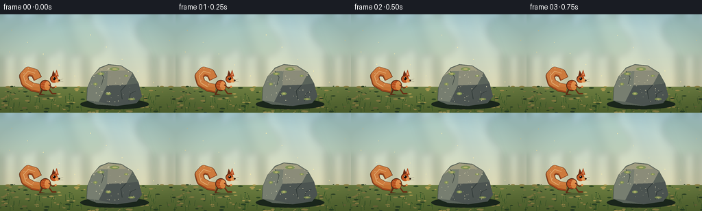
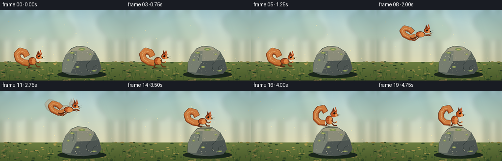
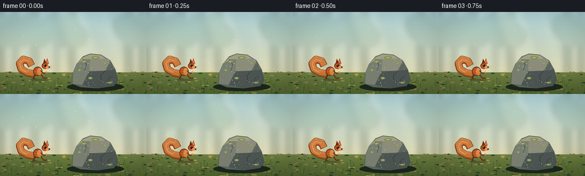
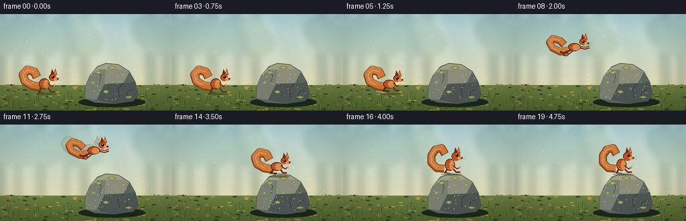

CODING AGENTS AS PIXEL WORLD MODELS
traex/GPT-5.6-Sol · dynamic_spatial_relationship_0025
点击播放 · 原生 RGB 像素
逐轮保存的候选
回放视频、检查图与代码变化。
每份候选均可单独播放。实际图片检查记录在下方工具轨迹中。
候选 01播放与检查图
点击播放 · 原生 RGB 像素


展开代码变化
--- 上一保存版本
+++ 本次保存版本
@@ -0,0 +1,261 @@
+from pathlib import Path
+import math
+import numpy as np
+from PIL import Image, ImageDraw, ImageFilter
+import artifact_io
+
+W, H, N = 256, 144, 20
+S = 4
+rng = np.random.default_rng(2501)
+
+def sc(v):
+ if isinstance(v, (tuple, list)):
+ return tuple(int(round(x*S)) for x in v)
+ return int(round(v*S))
+
+def bezier(p0,p1,p2,p3,t):
+ u=1-t
+ return (u**3*p0[0]+3*u*u*t*p1[0]+3*u*t*t*p2[0]+t**3*p3[0],
+ u**3*p0[1]+3*u*u*t*p1[1]+3*u*t*t*p2[1]+t**3*p3[1])
+
+def ellipse(d, box, fill, outline=None, width=1):
+ d.ellipse(sc(box), fill=fill, outline=outline, width=max(1,sc(width)))
+
+def line(d, pts, fill, width=1, joint='curve'):
+ d.line([sc(p) for p in pts], fill=fill, width=max(1,sc(width)), joint=joint)
+
+def poly(d, pts, fill, outline=None):
+ d.polygon([sc(p) for p in pts], fill=fill, outline=outline)
+
+def build_background():
+ # Soft, luminous forest; distant layers are deliberately subdued so the action reads.
+ im = Image.new('RGB',(W*S,H*S))
+ a=np.asarray(im).copy()
+ top=np.array([174,211,218.],float); bottom=np.array([239,220,168.],float)
+ for yy in range(H*S):
+ t=yy/(H*S-1)
+ c=top*(1-t)+bottom*t
+ a[yy,:,:]=np.clip(c,0,255)
+ im=Image.fromarray(a.astype(np.uint8))
+ # blurred distant trunks and crowns
+ far=Image.new('RGBA', im.size,(0,0,0,0)); d=ImageDraw.Draw(far)
+ for x,wid,shade in [(-5,11,(74,103,79,65)),(23,8,(72,99,77,48)),(54,13,(87,105,73,51)),(96,6,(66,95,78,45)),(121,11,(75,101,76,55)),(218,14,(64,91,72,55)),(244,9,(76,99,74,58))]:
+ d.rectangle((sc(x),0,sc(x+wid),sc(116)),fill=shade)
+ for j in range(3):
+ cx=(x+wid/2)+(j-1)*8
+ d.ellipse((sc(cx-19),sc(4+j*11),sc(cx+19),sc(45+j*8)),fill=(61,112,77,35))
+ far=far.filter(ImageFilter.GaussianBlur(sc(4.2)))
+ im=Image.alpha_composite(im.convert('RGBA'),far)
+ # shafts of warm light
+ glow=Image.new('RGBA',im.size,(0,0,0,0)); gd=ImageDraw.Draw(glow)
+ poly(gd,[(92,-5),(151,-5),(194,123),(137,123)],(255,248,202,29))
+ poly(gd,[(169,-5),(191,-5),(231,118),(202,118)],(255,248,208,19))
+ glow=glow.filter(ImageFilter.GaussianBlur(sc(8)))
+ im=Image.alpha_composite(im,glow)
+ d=ImageDraw.Draw(im)
+ # distant grass bank
+ d.rectangle((0,sc(106),W*S,H*S),fill=(91,116,66,255))
+ for yy in range(106,144):
+ t=(yy-106)/38
+ col=(int(108-30*t),int(125-28*t),int(65-22*t),255)
+ d.rectangle((0,sc(yy),W*S,sc(yy+1)),fill=col)
+ # forest floor patches and leaf-light
+ for i in range(165):
+ x=float(rng.uniform(0,W)); y=float(rng.uniform(105,H)); r=float(rng.uniform(.35,2.0))
+ if rng.random()<.52: c=(170,153,79,int(rng.uniform(25,75)))
+ else: c=(48,73,38,int(rng.uniform(24,60)))
+ d.ellipse((sc(x-r*2),sc(y-r*.6),sc(x+r*2),sc(y+r*.6)),fill=c)
+ # foreground grasses
+ for i in range(85):
+ x=float(rng.uniform(0,W)); y=float(rng.uniform(124,146)); h=float(rng.uniform(2,10))
+ col=(45,71+int(rng.uniform(0,22)),36,150)
+ line(d,[(x,y),(x+rng.uniform(-2,2),y-h)],col,rng.uniform(.35,.7))
+ return im
+
+BG=build_background()
+
+# fixed rock path
+ROCK=[(126,126),(127,108),(134,91),(145,78),(158,73),(177,75),(193,85),(202,101),(207,120),(199,130),(171,134),(141,132)]
+
+def draw_rock(im):
+ d=ImageDraw.Draw(im,'RGBA')
+ # grounded shadow
+ ellipse(d,(117,124,217,139),(26,38,27,92))
+ # boulder silhouette + layered facets
+ poly(d,ROCK,(91,100,91,255),(53,64,59,255))
+ poly(d,[(128,107),(135,90),(146,79),(158,74),(156,104),(144,128),(127,126)],(119,126,112,255))
+ poly(d,[(158,74),(177,76),(193,86),(184,103),(156,104)],(139,140,121,255))
+ poly(d,[(156,104),(184,103),(202,101),(207,120),(198,130),(171,134),(144,128)],(76,84,81,255))
+ poly(d,[(135,90),(146,79),(158,74),(177,76),(184,82),(147,83)],(161,158,129,145))
+ # cracks and lichen
+ line(d,[(184,103),(176,112),(178,124)],(47,56,54,135),1.0)
+ line(d,[(145,83),(151,92),(148,103)],(58,67,63,95),.8)
+ line(d,[(198,112),(190,116),(188,127)],(46,54,52,100),.7)
+ for x,y,rx,ry in [(147,87,5,2),(167,80,7,2.5),(184,90,3,1.5),(139,102,3,2),(192,124,5,1.4),(158,116,4,2)]:
+ ellipse(d,(x-rx,y-ry,x+rx,y+ry),(125,145,85,105))
+ ellipse(d,(x-rx*.45,y-ry*.45,x+rx*.45,y+ry*.45),(183,176,109,80))
+ # fine speckles
+ for i in range(42):
+ x=float(rng.uniform(132,201)); y=float(rng.uniform(79,129))
+ if point_in_poly(x,y,ROCK):
+ r=float(rng.uniform(.18,.55)); ellipse(d,(x-r,y-r,x+r,y+r),(210,205,170,80))
+
+def point_in_poly(x,y,p):
+ inside=False; j=len(p)-1
+ for i in range(len(p)):
+ xi,yi=p[i]; xj,yj=p[j]
+ if ((yi>y)!=(yj>y)) and x < (xj-xi)*(y-yi)/(yj-yi+1e-9)+xi: inside=not inside
+ j=i
+ return inside
+
+def draw_tail(d, x,y, angle, curl, alpha=255):
+ # Tail is a thick tapered set of strokes behind the body, giving a fluffy silhouette.
+ ca,sa=math.cos(angle),math.sin(angle)
+ def rot(px,py): return (x+px*ca-py*sa,y+px*sa+py*ca)
+ if curl=='ground':
+ pts=[rot(-2,4),rot(-13,3),rot(-24,-2),rot(-28,-12),rot(-22,-20),rot(-12,-18),rot(-7,-10)]
+ widths=[13,12,10]
+ elif curl=='flight':
+ pts=[rot(-3,3),rot(-14,6),rot(-26,1),rot(-31,-7),rot(-26,-13),rot(-16,-11),rot(-9,-5)]
+ widths=[11,10,8]
+ else: # upright perched plume sweeping left
+ pts=[rot(-3,4),rot(-14,3),rot(-22,-5),rot(-22,-16),rot(-16,-25),rot(-7,-27),rot(-2,-18)]
+ widths=[12,11,8]
+ line(d,pts,(77,39,19,alpha),widths[0])
+ line(d,pts,(157,72,29,alpha),widths[1])
+ # warm outer fibers / central highlights
+ shifted=[(px,py-1.2) for px,py in pts]
+ line(d,shifted,(205,113,48,int(alpha*.9)),widths[2])
+ line(d,pts[1:-1],(235,151,76,int(alpha*.65)),1.1)
+ # individual guard hairs along upper side
+ for k in range(1,len(pts)-1):
+ px,py=pts[k]
+ line(d,[(px,py-3.5),(px+1.5,py-5.0)],(242,170,91,int(alpha*.46)),.45)
+
+def draw_squirrel(im, x, y, pose, phase=0, ghost=False):
+ """x,y are body center. Local squirrel faces right."""
+ layer=Image.new('RGBA',im.size,(0,0,0,0)); d=ImageDraw.Draw(layer,'RGBA')
+ A=60 if ghost else 255
+ if pose=='stand':
+ ang=-0.04; stretch=1.0; body=(x-8,y-8,x+8,y+8); head=(x+7,y-15,x+18,y-4)
+ draw_tail(d,x-5,y+1,0.10,'ground',A)
+ # rear and fore legs; feet clearly touch ground
+ line(d,[(x-4,y+5),(x-8,y+13),(x-1,y+14)],(93,43,20,A),2.6)
+ line(d,[(x+5,y+5),(x+10,y+12),(x+16,y+12)],(105,48,20,A),2.2)
+ elif pose=='crouch':
+ ang=0.05; stretch=1.0; body=(x-10,y-6,x+8,y+7); head=(x+5,y-13,x+16,y-3)
+ draw_tail(d,x-6,y+1,0.08,'ground',A)
+ line(d,[(x-5,y+4),(x-10,y+10),(x-1,y+11)],(92,42,19,A),3)
+ line(d,[(x+4,y+4),(x+8,y+10),(x+14,y+10)],(105,48,20,A),2.5)
+ elif pose=='leap':
+ ang=-0.14 + .2*math.sin(phase*math.pi); stretch=1.15
+ draw_tail(d,x-7,y+2,ang+.05,'flight',A)
+ body=(x-10,y-6,x+9,y+6); head=(x+7,y-13,x+18,y-3)
+ # extended hind legs backwards and forepaws forwards
+ line(d,[(x-5,y+4),(x-16,y+9),(x-22,y+7)],(90,40,18,A),2.4)
+ line(d,[(x-2,y+5),(x-12,y+13),(x-18,y+12)],(117,50,20,A),2.0)
+ line(d,[(x+6,y+1),(x+16,y+3),(x+22,y+1)],(105,46,18,A),1.8)
+ line(d,[(x+7,y-1),(x+17,y),(x+22,y-2)],(128,56,22,A),1.4)
+ else: # perch
+ body=(x-7,y-11,x+8,y+7); head=(x+3,y-21,x+16,y-8)
+ draw_tail(d,x-5,y,0,'perch',A)
+ line(d,[(x-3,y+4),(x-7,y+10),(x+1,y+11)],(89,41,20,A),2.6)
+ line(d,[(x+4,y+3),(x+10,y+9),(x+16,y+9)],(102,46,20,A),2.2)
+ # contact shadow under ground/perched feet, except ghosts and leap
+ if not ghost and pose!='leap':
+ sy = y+15 if pose in ('stand','crouch') else y+12
+ ellipse(d,(x-13,sy-1.5,x+18,sy+2),(24,27,18,70))
+ # Body fur: dark rim, rich red, warm chest
+ ellipse(d,body,(73,34,17,A))
+ inset=(body[0]+1,body[1]+1,body[2]-1,body[3]-1)
+ ellipse(d,inset,(181,79,31,A))
+ ellipse(d,(body[0]+7,body[1]+2,body[2]-1,body[3]-1),(224,129,59,int(A*.9)))
+ # subtle fur strokes
+ for q in [(-4,-4,1,-2),(-6,0,0,1),(-3,4,2,4),(1,-5,5,-3)]:
+ line(d,[(x+q[0],y+q[1]),(x+q[2],y+q[3])],(243,157,79,int(A*.55)),.55)
+ # Head and muzzle
+ ellipse(d,head,(83,37,17,A))
+ ellipse(d,(head[0]+1,head[1]+1,head[2],head[3]),(192,84,32,A))
+ hx=(head[0]+head[2])/2; hy=(head[1]+head[3])/2
+ ellipse(d,(head[2]-4,hy,head[2]+3,hy+5),(231,150,83,A))
+ # pointed ears, one behind
+ poly(d,[(hx-3,head[1]+1),(hx-1,head[1]-7),(hx+3,head[1]+1)],(105,44,20,A))
+ poly(d,[(hx+1,head[1]+1),(hx+4,head[1]-8),(hx+7,head[1]+2)],(177,73,29,A))
+ poly(d,[(hx+3,head[1]),(hx+4,head[1]-5),(hx+5,head[1])],(234,139,93,int(A*.85)))
+ # eye with catchlight, nose, whiskers
+ ellipse(d,(head[2]-7,head[1]+3,head[2]-3,head[1]+7),(18,14,10,A))
+ ellipse(d,(head[2]-6.2,head[1]+3.5,head[2]-5.2,head[1]+4.5),(255,245,210,A))
+ ellipse(d,(head[2]+1,hy+1,head[2]+3.5,hy+3.2),(34,23,17,A))
+ for off in (-1,1):
+ line(d,[(head[2],hy+3+off),(head[2]+8,hy+2+off*2)],(52,38,28,int(A*.55)),.35)
+ # forearm when stationary/perched
+ if pose!='leap':
+ line(d,[(x+5,y-1),(x+11,y+4),(x+15,y+2)],(111,47,19,A),1.8)
+ ellipse(d,(x+13.5,y+.5,x+16.5,y+3.3),(224,137,72,A))
+ # composite, slight soften at antialias only
+ im.alpha_composite(layer)
+
+
+def squirrel_state(i):
+ # A readable story beat: left-of-rock hold, anticipation, smooth airborne arc, landing hold.
+ if i <= 3:
+ return 66.0,104.0,'stand',0.0
+ if i == 4:
+ return 68.0,106.0,'crouch',0.0
+ if i == 5:
+ return 70.0,104.0,'crouch',0.0
+ if 6 <= i <= 13:
+ t=(i-6)/7
+ # cubic horizontal easing, high arc that clears the boulder's left shoulder
+ x=73 + (157-73)*(3*t*t-2*t*t*t)
+ y=98 - 51*(4*t*(1-t)) - 25*t
+ return x,y,'leap',t
+ if i == 14:
+ return 158.0,62.0,'crouch',1.0
+ return 159.0,62.0,'perch',1.0
+
+
+def make_frame(i):
+ im=BG.copy()
+ d=ImageDraw.Draw(im,'RGBA')
+ # very subtle drifting dust/pollen gives depth without moving camera
+ for j in range(13):
+ x=(17+j*23+i*(.14+j*.012))%256
+ y=23+(j*17)%77+math.sin(i*.25+j)*1.1
+ ellipse(d,(x-.45,y-.45,x+.45,y+.45),(255,239,174,65))
+ # squirrel must pass in front of the rock when airborne; rock first.
+ draw_rock(im)
+ x,y,pose,ph=squirrel_state(i)
+ # launch dust at feet
+ if i in (5,6,7):
+ q=i-5
+ for k in range(5):
+ cx=63-k*3-q*(k+1)*.9; cy=118-q*1.5-k*.7
+ ellipse(d,(cx-1.8,cy-1,cx+1.8,cy+1),(192,167,105,max(0,85-q*20-k*7)))
+ # restrained motion echo only in the fastest middle frame
+ if i in (9,10,11):
+ tprev=max(0,(i-6-.45)/7)
+ xp=73+(157-73)*(3*tprev*tprev-2*tprev*tprev*tprev)
+ yp=98-51*(4*tprev*(1-tprev))-25*tprev
+ draw_squirrel(im,xp,yp,'leap',tprev,ghost=True)
+ draw_squirrel(im,x,y,pose,ph)
+ # landing flecks displaced from top of rock
+ if i in (14,15):
+ q=i-14
+ for k in range(5):
+ cx=147+k*5+(k-2)*q; cy=74-k%2*2-q*(2+k*.25)
+ ellipse(d,(cx-.8,cy-.5,cx+.8,cy+.5),(190,181,124,90-q*30))
+ # gentle cinematic vignette
+ vig=Image.new('RGBA',im.size,(0,0,0,0)); va=np.zeros((H*S,W*S,4),dtype=np.uint8)
+ yy,xx=np.mgrid[0:H*S,0:W*S]; dx=(xx-W*S/2)/(W*S/2); dy=(yy-H*S/2)/(H*S/2)
+ vv=np.clip((dx*dx+dy*dy-.52)*34,0,26).astype(np.uint8); va[:,:,3]=vv
+ va[:,:,:3]=np.array([22,31,26],dtype=np.uint8)
+ vig=Image.fromarray(va,'RGBA'); im=Image.alpha_composite(im,vig)
+ return np.asarray(im.convert('RGB').resize((W,H),Image.Resampling.LANCZOS),dtype=np.uint8)
+
+def main():
+ frames=np.stack([make_frame(i) for i in range(N)],axis=0)
+ artifact_io.save(frames,Path(__file__).resolve().parent)
+
+if __name__=='__main__':
+ main()
候选 02播放与检查图
点击播放 · 原生 RGB 像素


展开代码变化
--- 上一保存版本
+++ 本次保存版本
@@ -95,10 +95,12 @@
ellipse(d,(x-rx,y-ry,x+rx,y+ry),(125,145,85,105))
ellipse(d,(x-rx*.45,y-ry*.45,x+rx*.45,y+ry*.45),(183,176,109,80))
# fine speckles
+ # A fixed local seed keeps the stone texture perfectly stable across frames.
+ rock_rng = np.random.default_rng(550)
for i in range(42):
- x=float(rng.uniform(132,201)); y=float(rng.uniform(79,129))
+ x=float(rock_rng.uniform(132,201)); y=float(rock_rng.uniform(79,129))
if point_in_poly(x,y,ROCK):
- r=float(rng.uniform(.18,.55)); ellipse(d,(x-r,y-r,x+r,y+r),(210,205,170,80))
+ r=float(rock_rng.uniform(.18,.55)); ellipse(d,(x-r,y-r,x+r,y+r),(210,205,170,80))
def point_in_poly(x,y,p):
inside=False; j=len(p)-1
可观测工具轨迹
实际执行的命令与返回图片。
命令 1exit 0
/bin/bash -lc "cat prompt.txt && printf '\\n--- GENERATION_RULES ---\\n' && cat GENERATION_RULES.md"
命令 2exit 0
/bin/bash -lc "cat task_spec.json && printf '\\n--- FILES ---\\n' && find . -maxdepth 2 -type f -printf '%p\\n' | sort"
命令 3exit 0
/bin/bash -lc 'cat artifact_io.py'
命令 4exit 0
/bin/bash -lc "cat > generate.py <<'PY'
from pathlib import Path
import math
import numpy as np
from PIL import Image, ImageDraw, ImageFilter
import artifact_io
W, H, N = 256, 144, 20
S = 4
rng = np.random.default_rng(2501)
def sc(v):
if isinstance(v, (tuple, list)):
return tuple(int(round(x*S)) for x in v)
return int(round(v*S))
def bezier(p0,p1,p2,p3,t):
u=1-t
return (u**3*p0[0]+3*u*u*t*p1[0]+3*u*t*t*p2[0]+t**3*p3[0],
u**3*p0[1]+3*u*u*t*p1[1]+3*u*t*t*p2[1]+t**3*p3[1])
def ellipse(d, box, fill, outline=None, width=1):
d.ellipse(sc(box), fill=fill, outline=outline, width=max(1,sc(width)))
def line(d, pts, fill, width=1, joint='curve'):
d.line([sc(p) for p in pts], fill=fill, width=max(1,sc(width)), joint=joint)
def poly(d, pts, fill, outline=None):
d.polygon([sc(p) for p in pts], fill=fill, outline=outline)
def build_background():
# Soft, luminous forest; distant layers are deliberately subdued so the action reads.
im = Image.new('RGB',(W*S,H*S))
a=np.asarray(im).copy()
top=np.array([174,211,218.],float); bottom=np.array([239,220,168.],float)
for yy in range(H*S):
t=yy/(H*S-1)
c=top*(1-t)+bottom*t
a[yy,:,:]=np.clip(c,0,255)
im=Image.fromarray(a.astype(np.uint8))
# blurred distant trunks and crowns
far=Image.new('RGBA', im.size,(0,0,0,0)); d=ImageDraw.Draw(far)
for x,wid,shade in [(-5,11,(74,103,79,65)),(23,8,(72,99,77,48)),(54,13,(87,105,73,51)),(96,6,(66,95,78,45)),(121,11,(75,101,76,55)),(218,14,(64,91,72,55)),(244,9,(76,99,74,58))]:
d.rectangle((sc(x),0,sc(x+wid),sc(116)),fill=shade)
for j in range(3):
cx=(x+wid/2)+(j-1)*8
d.ellipse((sc(cx-19),sc(4+j*11),sc(cx+19),sc(45+j*8)),fill=(61,112,77,35))
far=far.filter(ImageFilter.GaussianBlur(sc(4.2)))
im=Image.alpha_composite(im.convert('RGBA'),far)
# shafts of warm light
glow=Image.new('RGBA',im.size,(0,0,0,0)); gd=ImageDraw.Draw(glow)
poly(gd,[(92,-5),(151,-5),(194,123),(137,123)],(255,248,202,29))
poly(gd,[(169,-5),(191,-5),(231,118),(202,118)],(255,248,208,19))
glow=glow.filter(ImageFilter.GaussianBlur(sc(8)))
im=Image.alpha_composite(im,glow)
d=ImageDraw.Draw(im)
# distant grass bank
d.rectangle((0,sc(106),W*S,H*S),fill=(91,116,66,255))
for yy in range(106,144):
t=(yy-106)/38
col=(int(108-30*t),int(125-28*t),int(65-22*t),255)
d.rectangle((0,sc(yy),W*S,sc(yy+1)),fill=col)
# forest floor patches and leaf-light
for i in range(165):
x=float(rng.uniform(0,W)); y=float(rng.uniform(105,H)); r=float(rng.uniform(.35,2.0))
if rng.random()<.52: c=(170,153,79,int(rng.uniform(25,75)))
else: c=(48,73,38,int(rng.uniform(24,60)))
d.ellipse((sc(x-r*2),sc(y-r*.6),sc(x+r*2),sc(y+r*.6)),fill=c)
# foreground grasses
for i in range(85):
x=float(rng.uniform(0,W)); y=float(rng.uniform(124,146)); h=float(rng.uniform(2,10))
col=(45,71+int(rng.uniform(0,22)),36,150)
line(d,[(x,y),(x+rng.uniform(-2,2),y-h)],col,rng.uniform(.35,.7))
return im
BG=build_background()
# fixed rock path
ROCK=[(126,126),(127,108),(134,91),(145,78),(158,73),(177,75),(193,85),(202,101),(207,120),(199,130),(171,134),(141,132)]
def draw_rock(im):
d=ImageDraw.Draw(im,'RGBA')
# grounded shadow
ellipse(d,(117,124,217,139),(26,38,27,92))
# boulder silhouette + layered facets
poly(d,ROCK,(91,100,91,255),(53,64,59,255))
poly(d,[(128,107),(135,90),(146,79),(158,74),(156,104),(144,128),(127,126)],(119,126,112,255))
poly(d,[(158,74),(177,76),(193,86),(184,103),(156,104)],(139,140,121,255))
poly(d,[(156,104),(184,103),(202,101),(207,120),(198,130),(171,134),(144,128)],(76,84,81,255))
poly(d,[(135,90),(146,79),(158,74),(177,76),(184,82),(147,83)],(161,158,129,145))
# cracks and lichen
line(d,[(184,103),(176,112),(178,124)],(47,56,54,135),1.0)
line(d,[(145,83),(151,92),(148,103)],(58,67,63,95),.8)
line(d,[(198,112),(190,116),(188,127)],(46,54,52,100),.7)
for x,y,rx,ry in [(147,87,5,2),(167,80,7,2.5),(184,90,3,1.5),(139,102,3,2),(192,124,5,1.4),(158,116,4,2)]:
ellipse(d,(x-rx,y-ry,x+rx,y+ry),(125,145,85,105))
ellipse(d,(x-rx*.45,y-ry*.45,x+rx*.45,y+ry*.45),(183,176,109,80))
# fine speckles
for i in range(42):
x=float(rng.uniform(132,201)); y=float(rng.uniform(79,129))
if point_in_poly(x,y,ROCK):
r=float(rng.uniform(.18,.55)); ellipse(d,(x-r,y-r,x+r,y+r),(210,205,170,80))
def point_in_poly(x,y,p):
inside=False; j=len(p)-1
for i in range(len(p)):
xi,yi=p[i]; xj,yj=p[j]
if ((yi>y)"'!=(yj>y)) and x < (xj-xi)*(y-yi)/(yj-yi+1e-9)+xi: inside=not inside
j=i
return inside
def draw_tail(d, x,y, angle, curl, alpha=255):
# Tail is a thick tapered set of strokes behind the body, giving a fluffy silhouette.
ca,sa=math.cos(angle),math.sin(angle)
def rot(px,py): return (x+px*ca-py*sa,y+px*sa+py*ca)
if curl=='"'ground':
pts=[rot(-2,4),rot(-13,3),rot(-24,-2),rot(-28,-12),rot(-22,-20),rot(-12,-18),rot(-7,-10)]
widths=[13,12,10]
elif curl=='flight':
pts=[rot(-3,3),rot(-14,6),rot(-26,1),rot(-31,-7),rot(-26,-13),rot(-16,-11),rot(-9,-5)]
widths=[11,10,8]
else: # upright perched plume sweeping left
pts=[rot(-3,4),rot(-14,3),rot(-22,-5),rot(-22,-16),rot(-16,-25),rot(-7,-27),rot(-2,-18)]
widths=[12,11,8]
line(d,pts,(77,39,19,alpha),widths[0])
line(d,pts,(157,72,29,alpha),widths[1])
# warm outer fibers / central highlights
shifted=[(px,py-1.2) for px,py in pts]
line(d,shifted,(205,113,48,int(alpha*.9)),widths[2])
line(d,pts[1:-1],(235,151,76,int(alpha*.65)),1.1)
# individual guard hairs along upper side
for k in range(1,len(pts)-1):
px,py=pts[k]
line(d,[(px,py-3.5),(px+1.5,py-5.0)],(242,170,91,int(alpha*.46)),.45)
def draw_squirrel(im, x, y, pose, phase=0, ghost=False):
\"\"\"x,y are body center. Local squirrel faces right.\"\"\"
layer=Image.new('RGBA',im.size,(0,0,0,0)); d=ImageDraw.Draw(layer,'RGBA')
A=60 if ghost else 255
if pose=='stand':
ang=-0.04; stretch=1.0; body=(x-8,y-8,x+8,y+8); head=(x+7,y-15,x+18,y-4)
draw_tail(d,x-5,y+1,0.10,'ground',A)
# rear and fore legs; feet clearly touch ground
line(d,[(x-4,y+5),(x-8,y+13),(x-1,y+14)],(93,43,20,A),2.6)
line(d,[(x+5,y+5),(x+10,y+12),(x+16,y+12)],(105,48,20,A),2.2)
elif pose=='crouch':
ang=0.05; stretch=1.0; body=(x-10,y-6,x+8,y+7); head=(x+5,y-13,x+16,y-3)
draw_tail(d,x-6,y+1,0.08,'ground',A)
line(d,[(x-5,y+4),(x-10,y+10),(x-1,y+11)],(92,42,19,A),3)
line(d,[(x+4,y+4),(x+8,y+10),(x+14,y+10)],(105,48,20,A),2.5)
elif pose=='leap':
ang=-0.14 + .2*math.sin(phase*math.pi); stretch=1.15
draw_tail(d,x-7,y+2,ang+.05,'flight',A)
body=(x-10,y-6,x+9,y+6); head=(x+7,y-13,x+18,y-3)
# extended hind legs backwards and forepaws forwards
line(d,[(x-5,y+4),(x-16,y+9),(x-22,y+7)],(90,40,18,A),2.4)
line(d,[(x-2,y+5),(x-12,y+13),(x-18,y+12)],(117,50,20,A),2.0)
line(d,[(x+6,y+1),(x+16,y+3),(x+22,y+1)],(105,46,18,A),1.8)
line(d,[(x+7,y-1),(x+17,y),(x+22,y-2)],(128,56,22,A),1.4)
else: # perch
body=(x-7,y-11,x+8,y+7); head=(x+3,y-21,x+16,y-8)
draw_tail(d,x-5,y,0,'perch',A)
line(d,[(x-3,y+4),(x-7,y+10),(x+1,y+11)],(89,41,20,A),2.6)
line(d,[(x+4,y+3),(x+10,y+9),(x+16,y+9)],(102,46,20,A),2.2)
# contact shadow under ground/perched feet, except ghosts and leap
if not ghost and pose"'!='"'leap':
sy = y+15 if pose in ('stand','crouch') else y+12
ellipse(d,(x-13,sy-1.5,x+18,sy+2),(24,27,18,70))
# Body fur: dark rim, rich red, warm chest
ellipse(d,body,(73,34,17,A))
inset=(body[0]+1,body[1]+1,body[2]-1,body[3]-1)
ellipse(d,inset,(181,79,31,A))
ellipse(d,(body[0]+7,body[1]+2,body[2]-1,body[3]-1),(224,129,59,int(A*.9)))
# subtle fur strokes
for q in [(-4,-4,1,-2),(-6,0,0,1),(-3,4,2,4),(1,-5,5,-3)]:
line(d,[(x+q[0],y+q[1]),(x+q[2],y+q[3])],(243,157,79,int(A*.55)),.55)
# Head and muzzle
ellipse(d,head,(83,37,17,A))
ellipse(d,(head[0]+1,head[1]+1,head[2],head[3]),(192,84,32,A))
hx=(head[0]+head[2])/2; hy=(head[1]+head[3])/2
ellipse(d,(head[2]-4,hy,head[2]+3,hy+5),(231,150,83,A))
# pointed ears, one behind
poly(d,[(hx-3,head[1]+1),(hx-1,head[1]-7),(hx+3,head[1]+1)],(105,44,20,A))
poly(d,[(hx+1,head[1]+1),(hx+4,head[1]-8),(hx+7,head[1]+2)],(177,73,29,A))
poly(d,[(hx+3,head[1]),(hx+4,head[1]-5),(hx+5,head[1])],(234,139,93,int(A*.85)))
# eye with catchlight, nose, whiskers
ellipse(d,(head[2]-7,head[1]+3,head[2]-3,head[1]+7),(18,14,10,A))
ellipse(d,(head[2]-6.2,head[1]+3.5,head[2]-5.2,head[1]+4.5),(255,245,210,A))
ellipse(d,(head[2]+1,hy+1,head[2]+3.5,hy+3.2),(34,23,17,A))
for off in (-1,1):
line(d,[(head[2],hy+3+off),(head[2]+8,hy+2+off*2)],(52,38,28,int(A*.55)),.35)
# forearm when stationary/perched
if pose"'!='"'leap':
line(d,[(x+5,y-1),(x+11,y+4),(x+15,y+2)],(111,47,19,A),1.8)
ellipse(d,(x+13.5,y+.5,x+16.5,y+3.3),(224,137,72,A))
# composite, slight soften at antialias only
im.alpha_composite(layer)
def squirrel_state(i):
# A readable story beat: left-of-rock hold, anticipation, smooth airborne arc, landing hold.
if i <= 3:
return 66.0,104.0,'stand',0.0
if i == 4:
return 68.0,106.0,'crouch',0.0
if i == 5:
return 70.0,104.0,'crouch',0.0
if 6 <= i <= 13:
t=(i-6)/7
# cubic horizontal easing, high arc that clears the boulder's left shoulder
x=73 + (157-73)*(3*t*t-2*t*t*t)
y=98 - 51*(4*t*(1-t)) - 25*t
return x,y,'leap',t
if i == 14:
return 158.0,62.0,'crouch',1.0
return 159.0,62.0,'perch',1.0
def make_frame(i):
im=BG.copy()
d=ImageDraw.Draw(im,'RGBA')
# very subtle drifting dust/pollen gives depth without moving camera
for j in range(13):
x=(17+j*23+i*(.14+j*.012))%256
y=23+(j*17)%77+math.sin(i*.25+j)*1.1
ellipse(d,(x-.45,y-.45,x+.45,y+.45),(255,239,174,65))
# squirrel must pass in front of the rock when airborne; rock first.
draw_rock(im)
x,y,pose,ph=squirrel_state(i)
# launch dust at feet
if i in (5,6,7):
q=i-5
for k in range(5):
cx=63-k*3-q*(k+1)*.9; cy=118-q*1.5-k*.7
ellipse(d,(cx-1.8,cy-1,cx+1.8,cy+1),(192,167,105,max(0,85-q*20-k*7)))
# restrained motion echo only in the fastest middle frame
if i in (9,10,11):
tprev=max(0,(i-6-.45)/7)
xp=73+(157-73)*(3*tprev*tprev-2*tprev*tprev*tprev)
yp=98-51*(4*tprev*(1-tprev))-25*tprev
draw_squirrel(im,xp,yp,'leap',tprev,ghost=True)
draw_squirrel(im,x,y,pose,ph)
# landing flecks displaced from top of rock
if i in (14,15):
q=i-14
for k in range(5):
cx=147+k*5+(k-2)*q; cy=74-k%2*2-q*(2+k*.25)
ellipse(d,(cx-.8,cy-.5,cx+.8,cy+.5),(190,181,124,90-q*30))
# gentle cinematic vignette
vig=Image.new('RGBA',im.size,(0,0,0,0)); va=np.zeros((H*S,W*S,4),dtype=np.uint8)
yy,xx=np.mgrid[0:H*S,0:W*S]; dx=(xx-W*S/2)/(W*S/2); dy=(yy-H*S/2)/(H*S/2)
vv=np.clip((dx*dx+dy*dy-.52)*34,0,26).astype(np.uint8); va[:,:,3]=vv
va[:,:,:3]=np.array([22,31,26],dtype=np.uint8)
vig=Image.fromarray(va,'RGBA'); im=Image.alpha_composite(im,vig)
return np.asarray(im.convert('RGB').resize((W,H),Image.Resampling.LANCZOS),dtype=np.uint8)
def main():
frames=np.stack([make_frame(i) for i in range(N)],axis=0)
artifact_io.save(frames,Path(__file__).resolve().parent)
if __name__=='__main__':
main()
PY
python generate.py
python - <<'PY'
import numpy as np
from PIL import Image
z=np.load('pixels.npz')['pixels']
print(z.shape,z.dtype, 'frames=',len(list(__import__('pathlib').Path('frames').glob('*.png'))))
print(Image.open('inspection.png').size)
PY"命令 5exit 0
/bin/bash -lc "python generate.py && python - <<'PY'
from pathlib import Path
import json, numpy as np
from PIL import Image
spec=json.loads(Path('task_spec.json').read_text())
z=np.load('pixels.npz')['pixels']
files=sorted(Path('frames').glob('*.png'))
assert z.shape==(spec['height'],spec['width'],spec['frames'])
assert len(files)==spec['frames']
for p in files:
im=np.asarray(Image.open(p))
assert im.shape==(spec['height'],spec['width'],3) and im.dtype==np.uint8
# motion diagnostic: count changed RGB pixels frame-to-frame
arr=np.stack([np.asarray(Image.open(p)) for p in files])
changes=np.count_nonzero(np.any(arr[1:] "'!= arr[:-1],axis=3),axis=(1,2))
print('"'validated',arr.shape,arr.dtype)
print('changed pixels/frame:',changes.tolist())
print('outputs:', ', '.join(str(p) for p in ['pixels.npz','index.html','inspection.png','transition_check.png']))
PY"视觉工具实际返回图片 1

保存候选 2 份；完成命令 5 次；可验证图片返回 1 张。原始 API 响应与完整日志保留在本地。